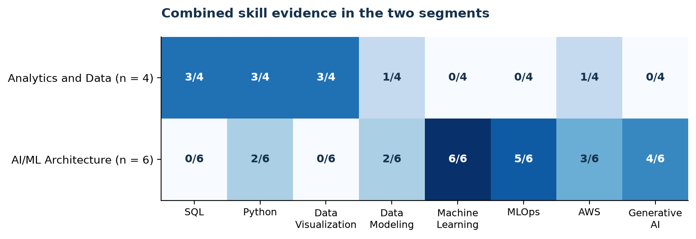

Final Analytics
Decision supported and analytical track
We use Option C, segmentation, to distinguish role families by their skill combinations and connect those differences to our student profile. The decision is which role family should guide our search and learning plan, considering skill fit, experience barriers, and reported pay. The model does not estimate hiring probability or a salary premium for individual skills.
Variables and method
Our input is the restored ten-posting panel and its prepared skill bridge. The bridge combines normalized source skill labels with controlled description-keyword matches. After removing one false R-language match, 37 skills occurring in at least three postings enter the binary feature matrix. These include technical, business, and communication skills. Each row is a posting; each feature records whether the skill appears at least once.
We use average-linkage hierarchical clustering with Jaccard distance, which compares shared skill presences without rewarding two postings for both omitting a skill. Each retained skill has equal weight. Salary, location, experience, employer identity, and our self-ratings are excluded from clustering and used for interpretation. We do not combine pay, accessibility, and fit into a weighted opportunity score.
Model selection and evaluation
We compare two, three, and four clusters. Our selection rule chooses the highest silhouette score among solutions containing at least two postings in every cluster. This rule avoids treating a single advertisement as an actionable role segment.
| Clusters | Silhouette | Smallest group | Singleton groups | Selected |
|---|---|---|---|---|
| 2 | 0.291 | 4 | 0 | Yes |
| 3 | 0.327 | 1 | 1 | No |
| 4 | 0.311 | 1 | 2 | No |
The two-cluster solution is selected, with a silhouette of 0.291. Three clusters have the highest score, 0.327, but create a singleton. Four clusters create two singletons. Only two clusters pass the minimum-size rule.
Silhouette measures internal separation on a scale from negative one to one, with larger values indicating clearer separation and values near zero indicating overlap (scikit-learn developers, n.d.). Our result supports an exploratory comparison with overlapping skill profiles. It is not a prediction-accuracy measure or a test on unseen postings.
Result and career meaning
We name the groups after reviewing their skill patterns. The naming rule identifies the architecture group through its average prevalence of Artificial Intelligence, Machine Learning, MLOps, Solution Architecture, and Cloud Computing Architecture. These names summarize the sample; they are not externally validated occupation classes.
| Segment | Postings | Salary coverage | Median pay | Median min years |
|---|---|---|---|---|
| Analytics and Data | 4 | 1/4 | $120,000 | 5 |
| AI/ML Architecture | 6 | 6/6 | $173,225 | 5 |
Median pay is the annual advertised salary midpoint among reporting postings. Median minimum years is the median stated minimum experience requirement.

SQL, Python, and Data Visualization each appear in three of four Analytics and Data postings. These skills align with our intermediate ratings. Machine Learning appears in all six AI/ML Architecture postings, MLOps in five, and Generative AI in four. That combination overlaps with our larger development needs.
We therefore recommend Analytics and Data as our nearer-term role-family search direction, with AI/ML Architecture as a longer-term learning target. Both groups require a median minimum of five years of experience. This is a relative skill-fit judgment; we still need to find early-career vacancies and check their requirements individually.
The median pay difference cannot establish a reliable segment premium. Salary coverage is six of six in AI/ML Architecture and only one of four in Analytics and Data. We cannot infer that cluster membership or a particular skill causes higher compensation.
Verification and practical limits
The unmodified preparation code reproduces the archived scores of 0.283, 0.319, and 0.305. Removing the single false R match produces the final scores of 0.291, 0.327, and 0.311. Cluster membership and all eight profile skill counts remain unchanged. Our final build also checks exact agreement with the restored feature matrix and posting assignments.
This verifies computational continuity and the effect of one extraction correction. It does not establish stability under new postings, employer changes, or other feature rules. With only ten observations, the groups remain hypotheses for organizing a career search. A new vacancy requires direct review of its responsibilities, experience, location, and pay.